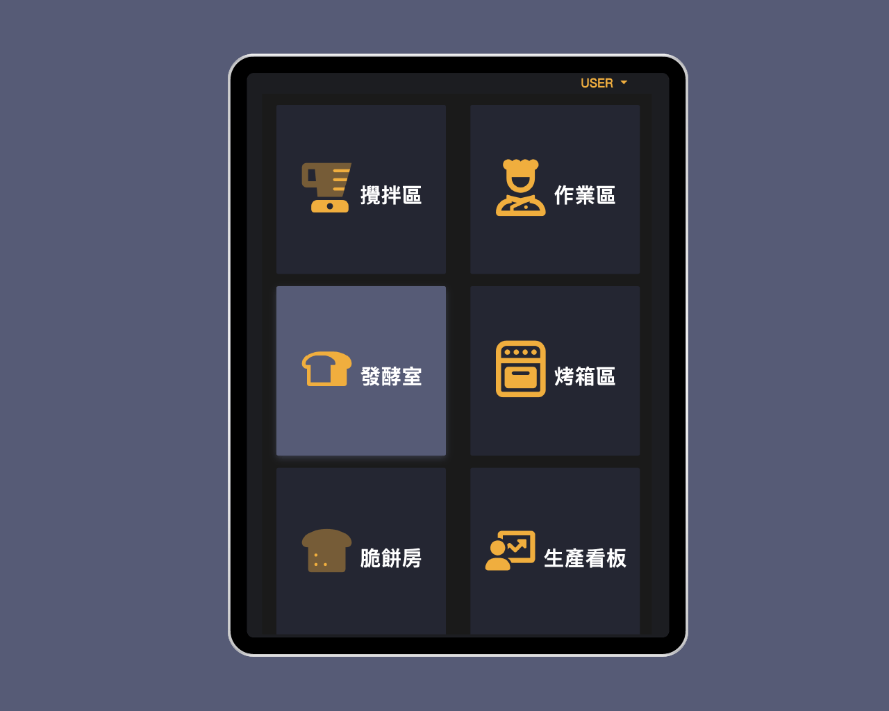
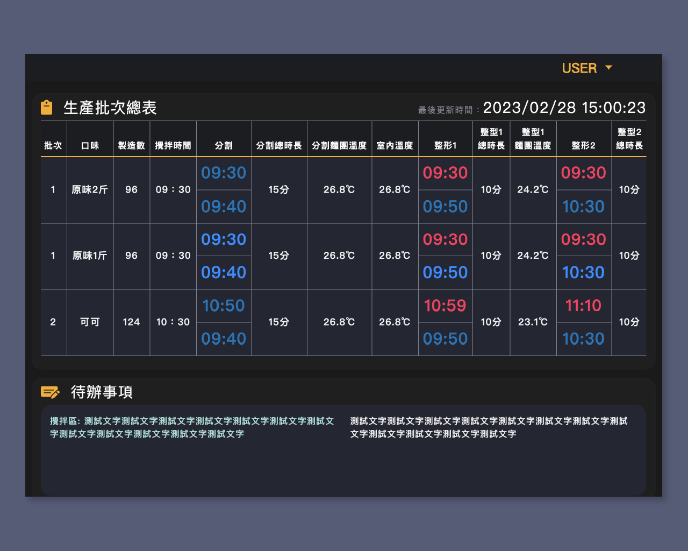
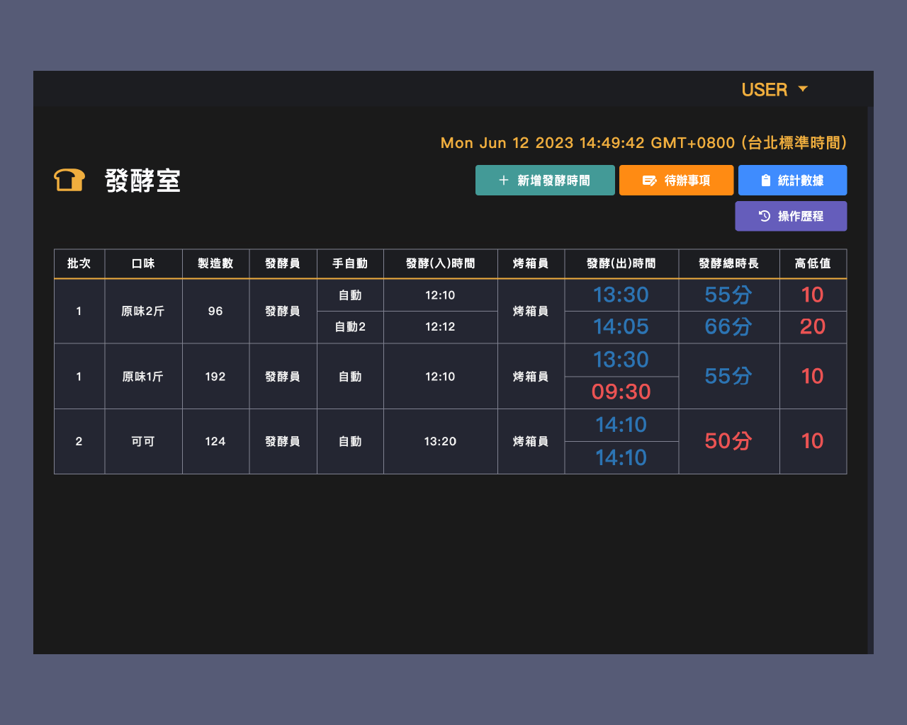
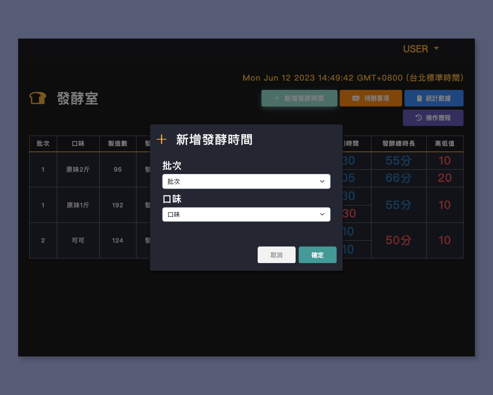
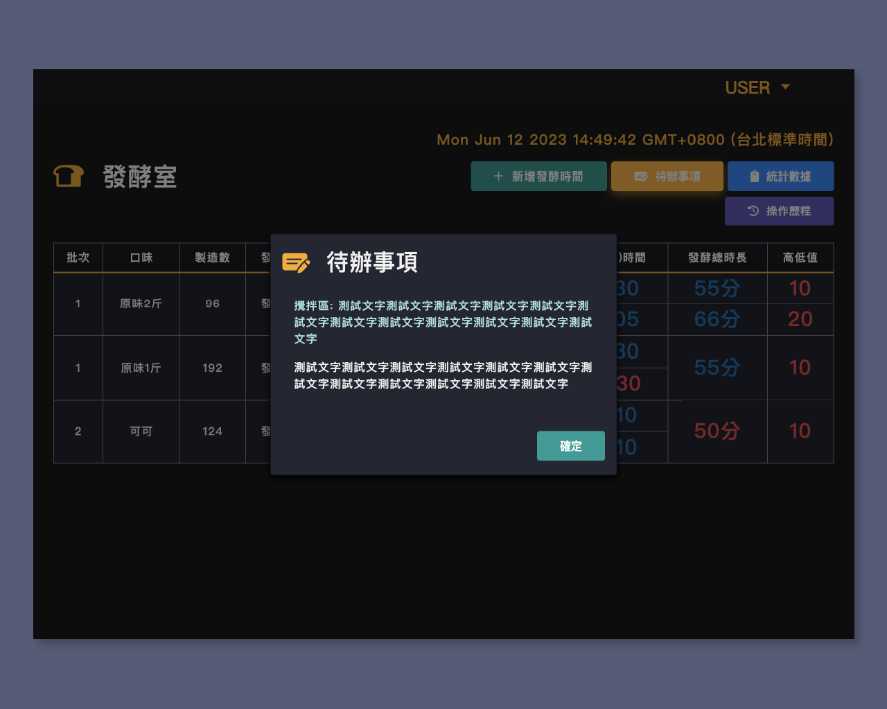
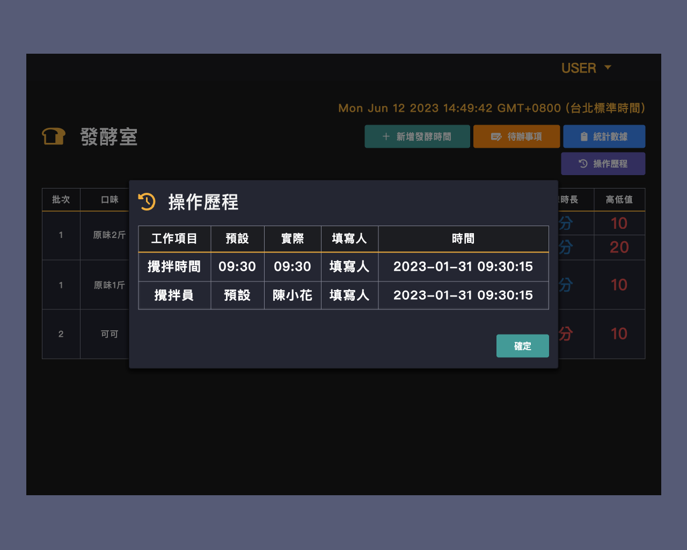
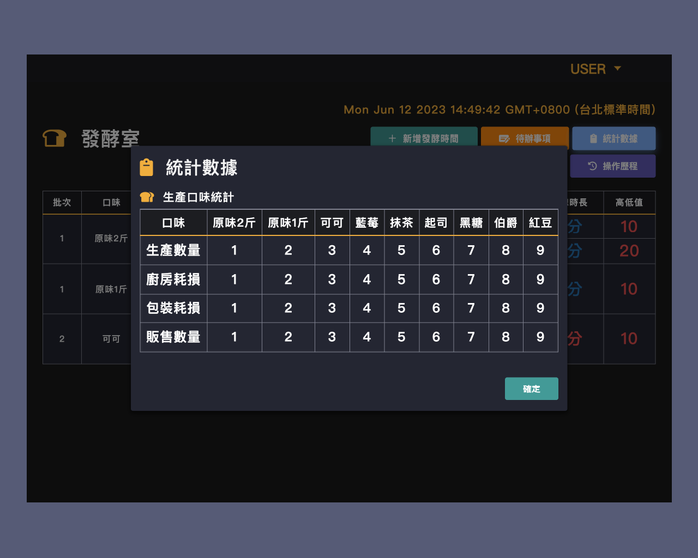

Bakery IoT System

BACKGROUND AND OBJECTIVES
The client wants to develop an operational decision support platform. The primary objectives of the project include recording production schedules and in-process data, allowing operational decision-makers to set business goals. Furthermore, the platform estimates next-day sales based on historical sales data and configures product production quantities for each store.
TEAM:
Project Manager/System Analyst, UI/UX Front-end Designer, Back-end developer, QA Engineer
ROLE:
UI/UX Front-end Designer, Basic frontend web development
TIMELINE:
2023 FEB - 2023 SEP about 3 months(client was busy a few month)
PROBLEM & SOLUTION


-
Traditional Handwritten Whiteboards:
- Problem: Customers have been using traditional handwritten whiteboards for years to keep records, resulting in low efficiency in tracking and managing operational data.
- Solution:
- Digital Production Board: Introduced a digital production board with real-time data, replacing the traditional handwritten whiteboards. This digitizes daily records, allowing customers to easily check daily production records on the system as long as they are connected to the internet. Additionally, it enables easy comparison of average sales numbers across different branches, facilitating adjustments in daily production to achieve resource savings and cost reduction.
- CMS Development for Enhanced Management: To complement the production board, we developed a backend management system (CMS) to make the production process data easy to manage. Since all data is reported in real-time, users can immediately make adjustments and receive notifications if there are any anomalies in the production department. Furthermore, we can use the collected daily data to make sales forecasts, fully utilizing the data to better understand daily production status and losses, further optimizing resource usage. Based on the data, it is also possible to effectively schedule, allocate, and manage the daily production needs of the stores, contributing to the achievement of annual efficiency goals.
Results








- Design:
Style：
The main color scheme for the backend is black, yellow, and white, aligning with the corporate identity. Due to the bright working environment in the manufacturing rooms, the production board and production stations use a dark mode for easier readability and operation.
Environment：
The production board is displayed on 4K large screens (in each manufacturing room) and FHD computers (for supervisors), while the production stations use iPad Air.
Highlights:：
- Since customers have long been accustomed to using handwritten whiteboards, they requested that the digital production board maintain a whiteboard format, displaying all data and the status and notifications of other manufacturing rooms at once. Considering the primary display of numbers, we referred to the design of stock market number boards. We used colors to distinguish start and end times and different information on the production board, leaving some space in each cell for clear readability from a distance. We conducted multiple online and on-site observations to adjust the readability of data in real environments and perfected the production process to meet the information needs of each manufacturing room.
- Each manufacturing room has only one production station, so we enlarged the text for easier operation and reading.
- The customer specifically requested that the backend production scheduling be accessible on mobile devices. Therefore, we simplified the key functions into a mobile version, allowing customers to manage production scheduling anytime, anywhere.
- Responsive Web Design (RWD):
The interface for tablet operations is developed and presented using Responsive Web Design (RWD) for adaptability, allowing workers in different production rooms to use it seamlessly. - Multilingual Support for Production Dashboard:
The production dashboard offers multilingual support, ensuring accessibility for users in different rooms. A real-time presentation of production progress and data is delivered daily to each room through the dashboard. - Performance and Production Configuration(CMS):
Our system achieves transparency and monitoring of the production process by providing real-time production boards and comprehensive production stations. Additionally, through the integration of frontend and backend data, we have implemented functions such as production scheduling, product management, access control, and report generation. Overall, our solution digitizes and simplifies the operational processes, ensuring real-time information access and delivering significant benefits to our customers.